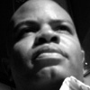

Harison Williams
President + Principal Designer
New York City, New York
Background Founder of the multidisciplinary design studio MINIMAL (MNML), is an accomplished designer and serial entrepreneur. A former Global Creative Director at Nike, he has lead design organizations such as IDEO, Thomson Consumer Electronics, Fortune Brands, and Motorola creating some of the most recognized consumer design icons.
MINIMAL Inc. (MNML)
November 2007 to Present (5 years 7 months)
MINIMAL create game-changing disruptive end-to-end experiences for today's most recognized global brands.
FULL BIO ON LINKEDIN >
comments on candidate s an accomplished designer and serial entrepreneur. A former Global Creative Director at Nike, he has lead design organizations such as IDEO, Thomson Consumer Electronics, Fortune Brands, and Motorola creating some of the most recognized consumer design icons.